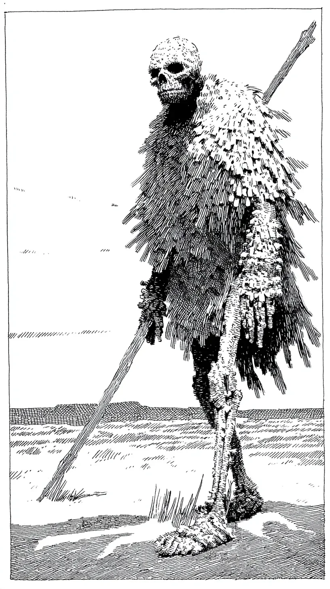

바람이 내 외투에서 딱지처럼 부서지기 쉬운 갈대 조각을 또 하나 앗아갔고, 그 조각은 수레바퀴처럼 돌며 텅 빈 하늘로 날아갔다. 이 의복은 한때 까마귀 깃털과 그림자의 기상을 품었으나, 이제는 그저 서서히 해체되며 쇠락이라는 굴욕을 증명할 뿐이었다.
[The wind stole another piece of my coat, a brittle scab of reeds that cartwheeled into the empty sky. This garment, once an ambition of raven feathers and shadow, was now just a slow unraveling, a testament to the indignity of entropy.]
한 걸음 내디딜 때마다 왼쪽 무릎이 판결을 내렸다. 영겁의 순례는 관절을 연골이 아닌, 이제는 스스로 갈려 먼지가 되는 얇고 수정 같은 광물로 채워버렸다. 그 결과, 뼛속까지 파고드는 날카로운 끽 소리가 났다. 마치 다이아몬드 첨필이 석판에 불만을 새겨 넣는 듯한 소음이었다. 끽. 질질. 덜그럭. 그것은 영원을 풀어내는 장단이었다.
[Each step was a verdict delivered by my left knee. Eons of pilgrimage had lined the joint not with cartilage, but with a thin, crystalline mineral that now ground itself to dust. The result was a sound, a piercing squeak that resonated through my very marrow—the noise a diamond stylus might make carving a complaint onto slate. Squeak. Drag. Clatter. It was a rhythm to unspool eternity.]
탐사라고 해두자. 녹물과 묵은 멍이 든 빛깔의 하늘을 배경으로 선 내 실루엣을 보고, 필멸자들은 나름의 목적을 만들어내곤 했다. 이를테면 달의 경첩이라도 부술 듯이 행진하는, 죽은 종교의 반신 같은 것으로 말이다. 진실은 그보다 보잘것없었고, 훨씬 더 절박했다. 나는 특정한 연둣빛 이끼를 찾고 있었다. 그 이끼의 효소는 삐걱거리는 결정을 일시적으로나마 매끄럽고 유연한 막으로 되돌릴 수 있었다. 나는 종말의 징조가 아니었다. 나는 세상에서 가장 긴 심부름을 하는 잡역부일 뿐이었다.
[Call it a quest. Mortals, seeing my silhouette against a sky the colour of rust and old bruises, would invent purpose for me: the un-god of a dead religion, marching to unhinge the moon. The truth was smaller, and far more desperate. I sought a specific, chartreuse moss whose enzymes could temporarily coax that grinding crystal back into a slick, forgiving lacquer. I wasn’t an omen of the apocalypse; I was a handyman on the world’s longest errand.]
가슴팍 안쪽에서부터 무언가 필사적으로 긁어대는 소리가 나더니, 굴뚝새들이었다. 지난주, 잔가지와 내게서 훔쳐 간 실오라기로 만든 그들의 조악한 둥지를 바람에 날려 버림으로써 그 깃털 달린 무단 점거자들에게 퇴거 통보를 했었다. 아무래도 빈자리가 다시 매물로 나온 모양이었다.
[A frantic scrabbling from inside my chest announced the wrens. I’d served those feathered squatters an eviction notice last week, tossing their shoddy nest of twigs and my own pilfered threads into the wind. Apparently, the vacancy had been re-listed.]
한때 속삭이는 묘목이었던 시절을 기억하는 규화목 지팡이에 몸을 기댄 채, 그 삐걱거리는 소리를 나의 무자비한 메트로놈 삼아 계속 나아갔다. 마침내 그것이 보였다. 북쪽 면이 그토록 찾아 헤매던 선명한 녹색으로 뒤덮인, 커다란 혹 같은 화강암이었다.
[I leaned into my staff—a length of petrified wood that remembered being a whispering sapling—and pressed on, the squeak my unforgiving metronome. Finally, I saw it: a carbuncle of granite, its northern face blessed with that singular, vibrant green.]
무릎을 꿇는 행위는 뼈와 후회가 빚어내는 느린 과정이었다. 오랜 고독으로 다듬어진 손길로, 나는 이끼를 채취했다. 손가락뼈에 닿는 그것은 특유의 폭신하고 서늘한 감촉으로, 침묵을 약속하는 듯했다. 나는 그 찜질 약을, 죽은 결정체에 맞서는 차갑고 살아있는 연고처럼 관절 깊숙이 채워 넣었다.
[Kneeling was a slow cantilever of bone and regret. With a touch refined by ages of solitude, I harvested the moss. It had a specific, spongy coolness in my phalanges, a texture that promised silence. I packed the poultice deep into the joint, a cold, living balm against the dead crystal.]
나는 일어섰다. 무게중심을 옮겼다. 한 걸음을 내디뎠다.
[I stood. I shifted my weight. I took a step.]
침묵. 장대한 오케스트라의 침묵이 아니라, 그보다 더 깊은 종류의 것. 봉인된 무덤 속의 절대적인 정적이었다. 나는 다시 나 자신이 되었다. 경외심을 자아내는 기념비이자, 뼈와 정적으로 이루어진 소문 그 자체가 되었다. 나는 두 번째의, 완벽한 걸음을 내디뎠다.
[Silence. Not a grand, orchestral silence, but a deeper kind: the absolute quiet of a sealed tomb. I was myself again, a dread monument, a rumour made of bone and stillness. I took a second, perfect step.]
질퍽.
[Squelch.]
태초의 진창에서 발을 빼는 듯한, 걸쭉하고 불경한 소리. 효소는 작용하고 있었지만, 이끼가 너무 익어버린 탓이었다. 나의 심오한 침묵은 늪지의 음향과 맞바꿔진 셈이었다.
[A thick, obscene noise, like a foot pulling from primal ooze. The enzyme was working, but the moss was overripe. My profound silence had been traded for the acoustics of a bog.]
나는 멈춰 섰다. 무심한 신이 그어놓은 완벽한 직선인 수평선을 바라보았다. 목구멍이 있어야 할 빈 공간에서, 그 자체로 작은 기상 현상이라 할 만한 한숨이 새어 나왔다. 끽 소리는 사라졌다. 하지만 이제, 나는 축축했다. 한 번에 한 문제씩.
[I stopped. I gazed at the horizon, a perfectly straight line drawn by an indifferent god. From the hollow where a throat ought to be, I produced a sigh that was its own small weather system. The squeak was gone. But now, I was damp. One problem at a time.]